Project Analysis
Link to analysis code: https://github.com/millashin/datascience_finalproject
Hypothesis
Main hypothesis and Study Overview
The main questions we are exploring are:
- Is an individual's initial attraction to someone, while in school, influenced by whether they have the same college major and/or the same intended career?
- And how do these effects translate to an impact on who an individual will end up marrying?
Our main hypothesis is:
An individual's initial attraction to someone, while in school, is positively influenced by whether they have the same college major, but not whether they have the same intended career. Conversely, marriage is more strongly influenced by whether partners have the same current occupation than whether they had the same college major. This is because we believe that dating, relationships, and marriage are products of proximity to other people and who someone is more likely to meet and interact with on a day-to-day basis
To investigate these questions, we divided our study into two parts:
- Analysis on initial attraction: analyzed the Kaggle dataset to see how intended career and current major affect an individual’s rating of their date’s attractiveness, likeability, and decision to go on a second date.
- Analysis on marriage: analyzed the US census dataset to compare the effects of having the same occupation vs. same college major on marriage, using a comparable population to the Kaggle study. Then, we paired similar college majors to occupations to investigate the differences and similarities within given fields.
Sub-hypotheses
Then we generated the following sub-hypotheses:
- Having the same college major while in school will positively influence an individual’s initial attraction to and their desire to date the other person
- If person A meets person B, and person B has the same college major, person A will rank person B’s attractiveness higher, on average, relative to if they had different college majors.
- If person A meets person B, and person B has the same college major, person A will rank person B’s overall likeability higher, on average, relative to if they had different college majors.
- If person A meets person B, and person B has the same college major, person A will be more likely to go on a second date with person B, relative to if they had different college majors.
- Having the same intended career while in school will positively influence an individual’s initial attraction to and their desire to date the other person.
- If person A meets person B, and person B has the same intended career, person A will rank person B’s attractiveness higher, on average, relative to if they had different intended careers.
- If person A meets person B, and person B has the same intended career, person A will rank person B’s overall likeability higher, on average, relative to if they had different intended careers.
- If person A meets person B, and person B has the same intended career, person A will be more likely to go on a second date with person B, relative to if they had different intended careers.
- Looking at the population as a whole, having the same occupation has a greater impact on marriage than having the same college major.
- When looking at specific occupations, however, the effect may not always be the same.
- Specifically, we believe that having the same occupation has a greater impact on marriage than having the same college major that is usually analogous to that occupation (i.e. biological sciences to healthcare work) only for hyper-specialized occupations (i.e. occupations that lack interdisciplinary interactions with other occupations). However, for other occupations with more interdisciplinary collaboration, having the same occupation has the same impact on marriage compared to having the same analogous college major. This is because a variety of college majors can lead to the same occupation (i.e. an english and a biology major can both become physicians).
Methodology
Challenges
Deciding on the right methodology to use was the hardest part of our analysis, because it was difficult to find parallels between the Kaggle dataset and the US Census dataset. For example, at first, we were going to do a z-test to compare the proportion of times an individual said yes to a date in the same major/intended career, with the proportion of married individuals with the same major/career as their spouse. However, we realized that we couldn’t really make this comparison, because we were measuring different things in each dataset--in the Kaggle data we were measuring a ranking or choice between yes/no, whereas in the census data we were measuring the frequency within an already established population of people who said yes to each other. In addition, we realized that our Kaggle data was not structured correctly for our analysis--previously, we had each row represent an individual, and the columns represent the average score of their ranking of others within each field. However, taking the average score took away details of separate pairings (i.e. the average doesn’t distinguish between someone who went on a date with 2 people and ranked 1 and 0 on each person--an average of 0.5, with someone who only went on one date and ranked the person 0.5). Thus, we restructured our data so that each row represented individual dates, and structured our analysis around date pairings rather than each individual. Another difficulty was that we had no negative samples in the census data (i.e. we didn’t have data on two people who said ‘no’ to marrying each other). Thus, unlike the Kaggle dataset, we couldn’t investigate how college major and occupation individually had an impact on marriage; instead, we could only compare their impacts on marriage.
Statistical Tests
Because of the challenges described above, we decided that we couldn’t perform any statistical tests comparing the two datasets directly, but we could do separate statistical tests on each dataset and compare the results.
Part 1: Analysis on initial attraction:we analyzed the Kaggle dataset to see how current college major affects an individual’s rating of their date’s attractiveness, likeability, and decision to go on a second date. Then, we repeated this for intended career (thus, we had a total of 6 tests--the effects of major / career on each of the three ratings). For the first two rankings of attractiveness and likeability, we used two-sample t-tests and linear regression, while the decision to go on a second date was analyzed with two-proportion z-tests and logistic regression.
- Two-Sample T-Test: t-test are used when comparing the means of two different groups and determining if there is a statistically significant difference between these means. Here we have two groups: individuals who went on a date with someone of the same major/career interest, and individuals who went on a date with someone with a different major/career interest. We want to compare the average score each group gave their date for attractiveness and likelihood.
- Linear Regression: linear regression is used when analyzing which predictor variables impact an outcome variable. Here we wanted to measure the extent to which having the same college major/intended career affects attractiveness and likeability score, and measure it against other predictor variables like gender, race, and specific major/occupation.
- Two-proportion Z-tests: z-tests are used when comparing two proportions. The last rating, the decision to go on a second date, is a binary variable of ‘1’ = yes or ‘0’=no. Thus, rather than a mean score, we are comparing the proportions of people who said yes or no within each group, so a z-test is more appropriate than the previously explained t-tests for the last rating.
- Logistic Regression: logistic regression is similar to linear regression except the predictor variable is binary (1 or 0). The decision to go on another date is a binary variable, so we did the exact same thing as linear regression but used a logistic regression instead.
Part 2: Analysis on marriage: as explained earlier, we couldn’t analyze the individual effects of college major/occupation on the US census dataset because we had no negative samples. Thus, we first compared the proportion of married couples in the same major with the proportion of couples in the same occupation using a two-proportion z-test. This helped us understand which factor has a bigger influence on marriage. Then, to investigate the differences in college major vs. occupation within specific fields, we paired similar college majors to occupations and analyzed the differences in proportions between each one of them using a chi-squared test
- Two-proportion Z-tests: z-tests are used when comparing two proportions. Here we have two proportions: the percentage of married couples with the same college major, and the percentage of married couples with the same occupation. A z-test helps us determine the statistical significance of the difference between these percentages.
- Chi-Squared Test: chi-squared tests are used to compare the distribution of a categorical variable within two groups. First we group together related college majors with occupations and create pairings (x,y). An example pairing would be economics majors and business occupations. Now we have two groups: individuals who majored in x, and individuals whose occupation is y. There are two categories for each of these groups: individuals who married someone within that field, and individuals who did not. We get a contingency table for each (x,y) pairing shown below. Using chi-squared tests, we can determine if in a given field (such as “CS/engineering”), the distribution of people with that college major (eg: “CS major”) who married within the same field is the same as the the distribution of people with that occupation (eg: “software engineering”) who married within the same field.
| Married someone in same field (major or occupation) | Married in different field (major or occupation) |
Individuals who majored in x | - | - |
Individuals whose occupation is y | - | - |
Visualizations
To visualize the results of the hypothesis tests above, we used a variety of data visualization methods including:
- Box Plot and Violin Plot: The joint usage of box plots and violin plots were intended to show differences, or lack thereof, in a mean value of a variable on a continuous interval (i.e. Attractiveness Score, Likeability Score...etc.) between two groups. The integration of both plots was three-fold. First, it allows the viewer to get a general idea of where the mean value is located. Second, the box plot in particular also allows the viewer to readily identify the median and interquartile range, two important components of a set of data. Third, the violin plot in particular allows the viewer to determine what distribution the data abides by, specifically whether or not it is normally distributed. Being able to identify that it is normally distributed is important to our analyses because we utilize the two-sample T-Test which requires an assumption of normality in the data. Therefore, the violin plot allows us to justify our reasoning for choosing the two-sample T-Test, as opposed to another technique like the Wilcoxon Mann-Whitney test, a nonparametric difference of means test for non-normally distributed data.
- Bar Plots: bar plots are used to make a side-by-side comparison of two values. When analyzing binary variables like the decision to go on another date, or when comparing proportions in general, we thought that bar graphs would be the simplest visualization.
- Tables: for the linear and logistic regressions, we had so many predictor variables, especially because we used dummy variables for both individual’s occupations/college majors). Thus, it is very difficult to visualize on a graph. We thought the easiest way to visualize the results were by putting the coefficients and p-values of the most interesting predictor variables
Results
Part 1: Analysis on Initial Attraction using Kaggle Dataset
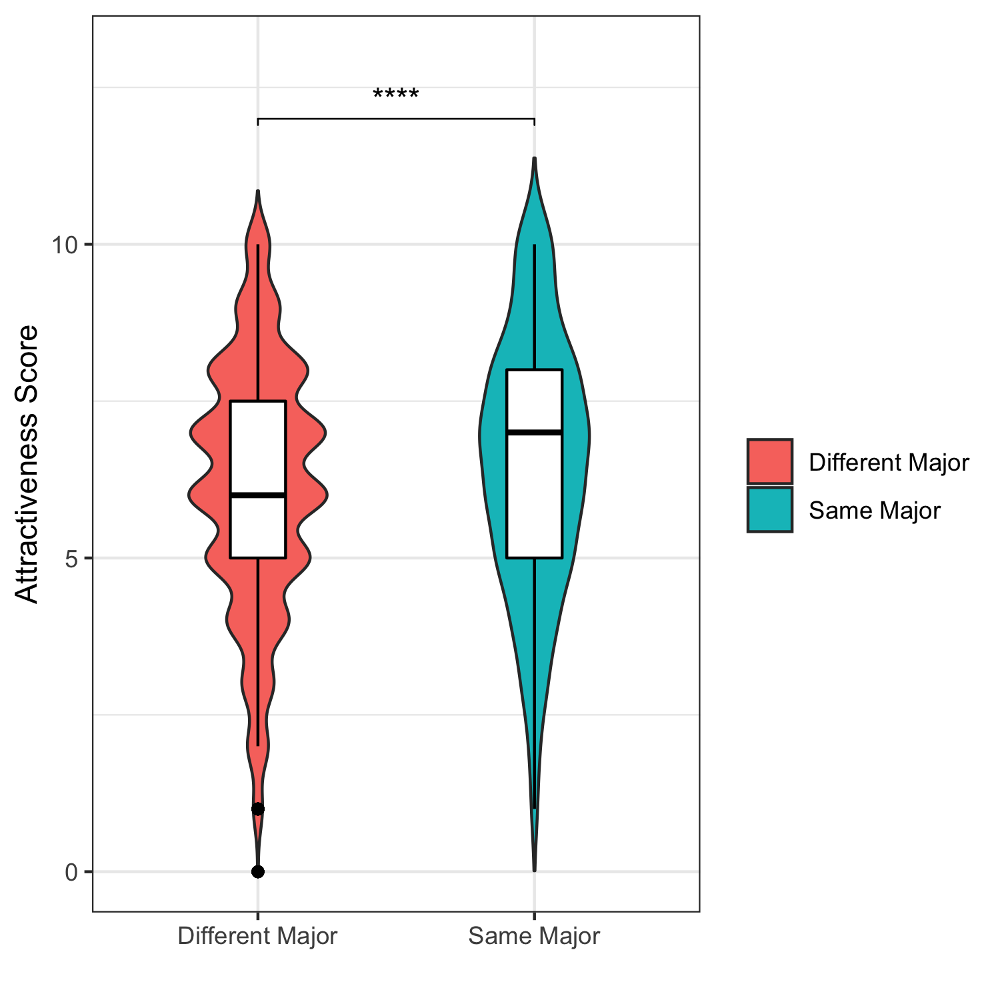
1.1: Effect of College Major on Mean Attractiveness Score
1.1.a: Two-Sample T-tests (college major, attractiveness)
Hypothesis: "On average, people with the same major will rank each other’s attractiveness higher than they would another individual in a different major"
- Null Hypothesis: Mean Attractiveness Score is equal
- Alternate Hypothesis: Mean Attractiveness Score is not equal
- Mean Attractiveness Score For “Different Major” pairs: 6.155
- Mean Attractiveness Score For “Same Major” pairs: 6.458
- 95% Confidence Interval for Difference in Mean: (-0.439, -0.167)
- 2-Sample T-Test, Test Statistic: -4.3834
- P-Value: 1.272e-05 (< 0.001)
- Conclusion: We reject the null hypothesis and conclude that there is a difference in the mean attractiveness score between the two groups.
1.1.b: Linear Regression Analysis (college major, attractiveness)
- Objective: Given two people, person A and person B, predict the attractiveness score that person A will give person B controlling for and using the following covariates:
- Person A’s Gender
- Person A’s College Major
- Person B’s College Major
- Person A’s Race
- Person B’s Race
- Yes/No to Person A and Person B having the same College Major
- Yes/No to Person A and Person B having the same Race
- Computed Model’s Coefficients
Variable | Coefficient | P-Value |
Same College Major (relative to Different College Major) | 0.319 | 2.93e-06 *** |
Same Race (relative to Different Race) | 0.076 | 0.155 |
Male (relative to Female) | 0.805 | < 2e-16 *** |
*For brevity and succinctness, we did not list out the coefficient and corresponding p-value for every college major and race that Person A or Person B could be.
Any subcategories of interest will be mentioned directly in text |
- Having the same college major is an independent and statistically significant predictor of attractiveness score. On average, if person A and person B possess the same college major, person A will rank person B 0.319 points higher on a 1-10 scale, as compared to if person B were a different college major than person A.
- Having the same race is not a statistically significant predictor of attractiveness score. On average, an individual will rate another individual’s attractiveness indiscriminately of what it is relative to their personal race.
- However, this is not to say that race does not play a role in an individual’s attractiveness score, according to our model. For example, being of Asian origin is an independent and statistically significant predictor of attractiveness score, where on average, an Asian individual will be scored 0.345 points lower on a 1-10 scale, as compared to all other races. This unfortunately reaffirms sociological and quantitative analyses recently performed that highlight this societal perception of Asian Americans.
- Being male was an independent and statistically significant predictor of attractiveness score. Men, as opposed to women, would rate their counterpart higher on average by 0.805 points on a 1-10 scale.
Part 1.2: Effect of College Major on Mean Likeability Score
1.2.a: Two-Sample T-tests (college major, likeability )
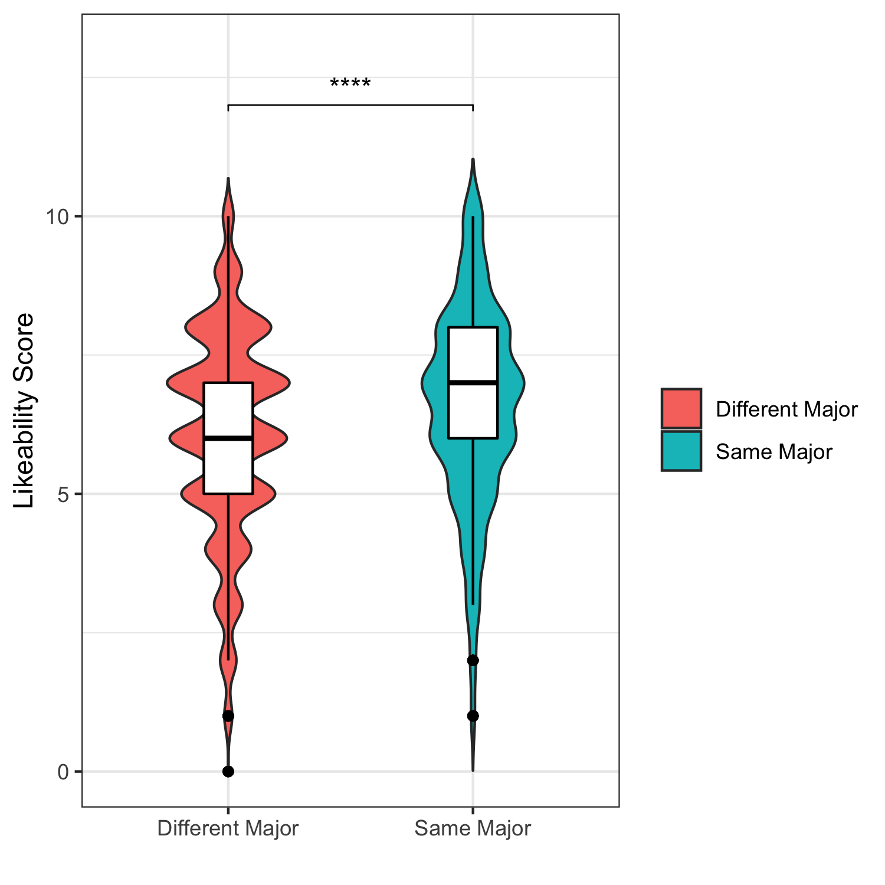
Hypothesis: "On average, people with the same major will rank each other’s overall likeability higher than they would another individual in a different major"
- Null Hypothesis: Mean Likeability Score is equal
- Alternate Hypothesis: Mean Likeability Score is not equal
- Mean Likeability Score For “Different Major” pairs: 6.075
- Mean Likeability Score For “Same Major” pairs: 6.589
- 95% Confidence Interval for Difference in Mean: (-0.635, -0.392)
- 2-Sample T-Test, Test Statistic: -8.2873
- P-Value: 3.042e-16 (< 0.001)
- Conclusion: We reject the null hypothesis and conclude that there is a difference in the mean likeability score between the two groups.
1.2.b: Linear Regression Analysis (college major, likeability)
- Objective: Given two people, person A and person B, predict the overall likeability score that person A will give person B controlling for and using the following covariates:
- Person A’s Gender
- Person A’s College Major
- Person B’s College Major
- Person A’s Race
- Person B’s Race
- Yes/No to Person A and Person B having the same College Major
- Yes/No to Person A and Person B having the same Race
- Computed Model’s Coefficients
Variable | Coefficient | P-Value |
Same College Major (relative to Different College Major) | 0.472 | 5.84e-13 *** |
Same Race (relative to Different Race) | 0.166 | 0.0012 ** |
Male (relative to Female) | 0.410 | 3.97e-15 *** |
*For brevity and succinctness, we did not list out the coefficient and corresponding p-value for every college major and race that Person A or Person B could be.
Any subcategories of interest will be mentioned directly in text |
- Having the same college major is an independent and statistically significant predictor of overall likeability score. On average, if person A and person B possess the same college major, person A will rank person B 0.472 points higher on a 1-10 scale, as compared to if person B were a different college major than person A.
- Having the same race is an independent and statistically significant predictor of overall likeability score. On average, if person A and person B are of the same race, person A will rank person B 0.166 points higher on a 1-10 scale, as compared to if person B were a different college race than person A.
- Seeing as being of the same race was not an independent predictor of attractiveness score, but was a significant predictor of overall likeability, we believe that there may be an underlying reason for this that might be rooted in the hypothesis that individuals of the same race possess a greater amount of shared interests, having grown up in a similar environment, and are therefore more relatable to one another and can get along more easily.
- To test the hypothesis above, we did a sub-test looking into the average correlated interest (a variable indicating how strong of a correlation there is between the interests of a pair) and seeing if there was a difference in means between pairs of the same race and pairs of different races.

- While on first glance, there does not appear to be a substantial difference, after performing a 2-Sample T-Test, there is indeed a significant difference in the mean shared interest correlation between the group of pairs with different races and the group of pairs with the same race.
- Null Hypothesis: Mean Shared Interest Score is equal
- Alternate Hypothesis: Mean Shared Interest Score is not equal
- Mean Shared Interest Score For “Different Race” pairs: 0.189
- Mean Shared Interest Score For “Same Race” pairs: 0.205
- 95% Confidence Interval for Difference in Mean: (0.002, 0.029)
- 2-Sample T-Test, Test Statistic:2.2739
- P-Value: 0.023
- Conclusion: We reject the null hypothesis and conclude that there is a difference in the mean shared interest between the groups.
- Our sub-investigation provides evidence supporting the thought that the reason why being of the same race influences overall likeability score but not attractiveness score could be rooted in the fact that there is a stronger degree of shared interests in pairs with the same race, as opposed to pairs with a different race.
- Similar to before, being male was an independent and statistically significant predictor of overall likeability score. Men, as opposed to women, would rate their counterpart higher on average by 0.410 points on a 1-10 scale.
Part 1.3: Effect of College Major on Likelihood to Agree on a Second Date
1.3.a Two-Proportion Z-test (college major, Second date )
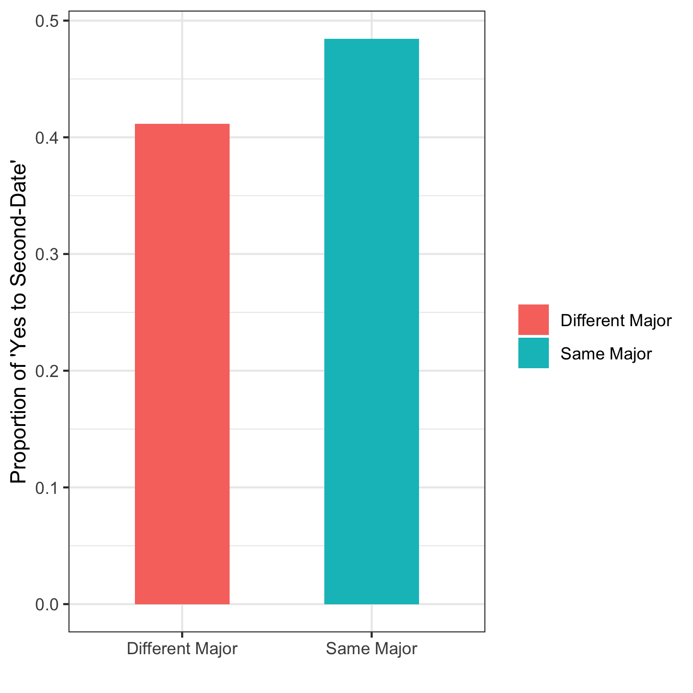
Hypothesis: "People with the same major will be more likely to agree to a second-date"
- Null Hypothesis: Proportion of “Yes to Second-Date” is equal
- Alternate Hypothesis: Proportion of “Yes to Second-Date” is not equal
- Proportion of “Different Major” pairs agreeing to Second-Date: 0.412
- Proportion of “Same Major” pairs agreeing to Second-Date: 0.484
- 95% Confidence Interval for Difference in Proportion: (-0.107, -0.039)
- 2-Sample Proportions Z-Test, Test Statistic: 18.263
- P-Value: 1.925e-05 (< 0.001)
- Conclusion: We reject the null hypothesis and conclude that there is a difference in the proportion of individuals who say ‘Yes’ to a second-date between the two groups.
1.3.b: Logistic Regression Analysis (college major, Second date )
- Objective: Given two people, person A and person B, predict the probability that person A will want to go on another date, controlling for and using the following covariates:
- Person A’s Gender
- Person A’s College Major
- Person B’s College Major
- Person A’s Race
- Person B’s Race
- Yes/No to Person A and Person B having the same College Major
- Yes/No to Person A and Person B having the same Race
- Computed Model’s Coefficients
Variable | Coefficient | P-Value | Odds Ratio |
Same College Major (relative to Different College Major) | 0.285 | 0.000133 *** | 1.329 |
Same Race (relative to Different Race) | 0.222 | 0.000182 *** | 1.249 |
Male (relative to Female) | 0.807 | < 2e-16 *** | 2.241 |
*For brevity and succinctness, we did not list out the coefficient and corresponding p-value for every college major and race that Person A or Person B could be.
Any subcategories of interest will be mentioned directly in text |
- Having the same college major will significantly increase an individual’s odds of wanting to go on a second date with a person. Specifically, the odds are 1.33 times higher that person A will want to go on a second date with person B, given that person A and person B are of the same college major.
- Having the same race will significantly increase an individual’s odds of wanting to go on a second date with a person. Specifically, the odds are 1.25 times higher that person A will want to go on a second date with person B, given that person A and person B are of the same race.
- Being a man will significantly increase that individual’s odds of wanting to go on a second date. Specifically, the odds have more than doubled and are 2.24 times higher that person A will want to go on a second date with person B, given that person A is a man.
1.4: Effect of Intended Career on Mean Attractiveness Score
1.4.a: Two-Sample T-tests (intended career , attractiveness)
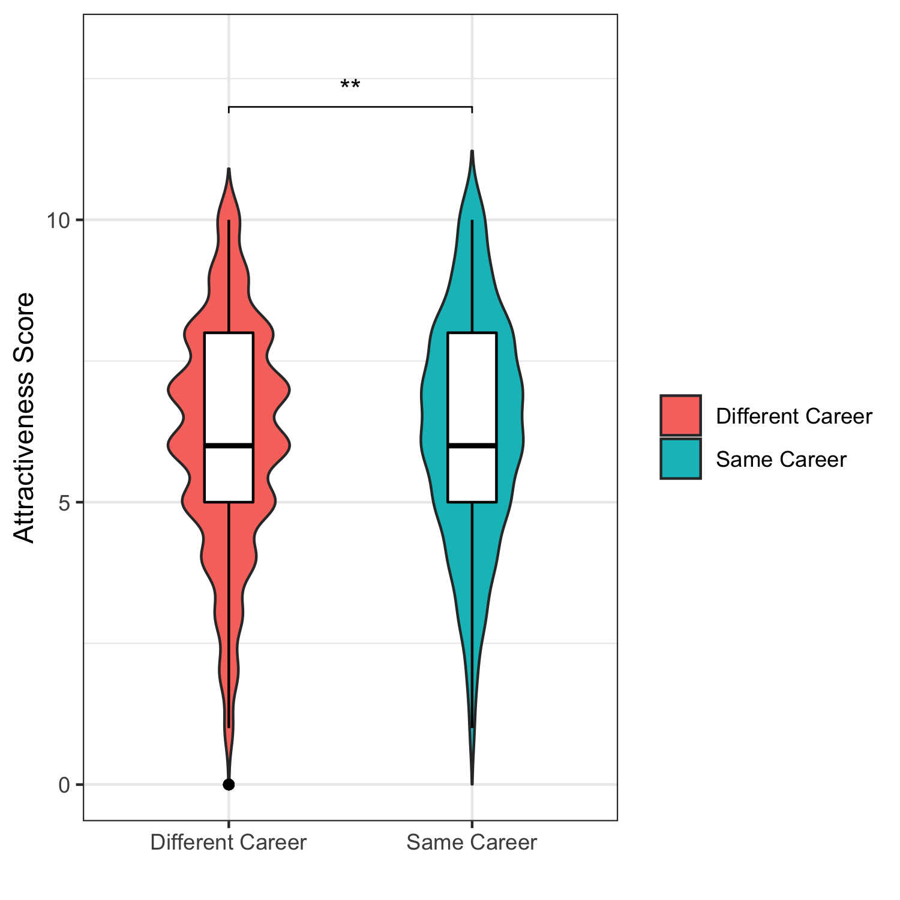
Hypothesis: "On average, people with the same intended career will rank each other’s attractiveness higher than they would another individual in a different major"
- Null Hypothesis: Mean Attractiveness Score is equal
- Alternate Hypothesis: Mean Attractiveness Score is not equal
- Mean Attractiveness Score For “Different Career” pairs: 6.162
- Mean Attractiveness Score For “Same Career” pairs: 6.314
- 95% Confidence Interval for Difference in Mean: (-0.261, -0.043)
- 2-Sample T-Test, Test Statistic: -2.7307
- P-Value: 0.006
- Conclusion: We reject the null hypothesis and conclude that there is a difference in the mean attractiveness score between the two groups.
- Relative to the comparison made based on college major, the difference in mean attractiveness score based on intended career is not as strong as the difference in mean attractiveness score based on college major.
1.4.b: Linear Regression (intended career , attractiveness)
- Objective: Given two people, person A and person B, predict the attractiveness score that person A will give person B controlling for and using the following covariates:
- Person A’s Gender
- Person A’s Intended Career
- Person B’s Intended Career
- Person A’s Race
- Person B’s Race
- Yes/No to Person A and Person B having the same Intended Career
- Yes/No to Person A and Person B having the same Race
- Computed Model’s Coefficients
Variable | Coefficient | P-Value |
Same Intended Career (relative to Different Intended Career) | 0.131 | 0.033 * |
Same Race (relative to Different Race) | 0.061 | 0.258 |
Male (relative to Female) | 0.702 | < 2e-16 *** |
*For brevity and succinctness, we did not list out the coefficient and corresponding p-value for every college major and race that Person A or Person B could be.
Any subcategories of interest will be mentioned directly in text |
- Having the same intended career is an independent and statistically significant predictor of attractiveness score. On average, if person A and person B possess the same intended career, person A will rank person B 0.131 points higher on a 1-10 scale, as compared to if person B were in a different intended career path than person A.
- Compared to the regression model based on college major, being in the same career path does not influence levels of attractiveness as much.
- Having the same race is not a statistically significant predictor of attractiveness score. On average, an individual will rate another individual’s attractiveness indiscriminately of what it is relative to their personal race.
- This finding is consistent with what was found in the linear regression model centered on college major instead of intended career occupation.
- Being male was an independent and statistically significant predictor of attractiveness score. Men, as opposed to women, would rate their counterpart higher on average by 0.702 points on a 1-10 scale.
- Again, this finding is consistent with what was found in the linear regression model centered on college major
1.5: Effect of Intended Career on Mean Likeability Score
1.5.a: Two-Sample T-tests (intended career , likeability)
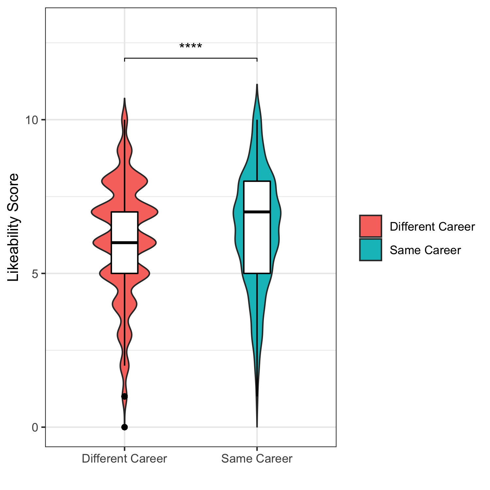
Hypothesis: "On average, people with the same intended career will rank each other’s overall likeability higher than they would another individual in a different intended career"
- Null Hypothesis: Mean Likeability Score is equal
- Alternate Hypothesis: Mean Likeability Score is not equal
- Mean Likeability Score For “Different Major” pairs: 6.080
- Mean Likeability Score For “Same Major” pairs: 6.376
- 95% Confidence Interval for Difference in Mean: (-0.398, -0.192)
- 2-Sample T-Test, Test Statistic: -5.6223
- P-Value: 2.124e-08 (< 0.001)
- Conclusion: We reject the null hypothesis and conclude that there is a difference in the mean likeability score between the two groups.
- Similarly, relative to the comparison made based on college major, the difference in mean likeability score based on intended career is not as strong as the difference in mean likeability score based on college major. This is consistent with what was seen in the analysis above with regards to mean attractiveness score and intended career.
1.5.b: Linear Regression (intended career , likeability)
- Objective: Given two people, person A and person B, predict the overall likeability score that person A will give person B controlling for and using the following covariates:
- Person A’s Gender
- Person A’s Intended Career
- Person B’s Intended Career
- Person A’s Race
- Person B’s Race
- Yes/No to Person A and Person B having the same Intended Career
- Yes/No to Person A and Person B having the same Race
- Computed Model’s Coefficients
Variable | Coefficient | P-Value |
Same Intended Career (relative to Different Intended Career) | 0.282 | 1.77e-06 *** |
Same Race (relative to Different Race) | 0.160 | 0.001795 ** |
Male (relative to Female) | 0.315 | 2.35e-11 *** |
*For brevity and succinctness, we did not list out the coefficient and corresponding p-value for every college major and race that Person A or Person B could be.
Any subcategories of interest will be mentioned directly in text |
- Having the same intended career is an independent and statistically significant predictor of overall likeability score. On average, if person A and person B possess the same college major, person A will rank person B 0.282 points higher on a 1-10 scale, as compared to if person B were a different college major than person A.
- Compared to the regression model based on college major, being in the same career path does not influence levels of likeability as much.
- Having the same race is an independent and statistically significant predictor of overall likeability score. On average, if person A and person B are of the same race, person A will rank person B 0.160 points higher on a 1-10 scale, as compared to if person B were a different college race than person A.
- This finding is consistent with what was found in the linear regression model centered on college major instead of intended career occupation.
- Similar to before, being male was an independent and statistically significant predictor of overall likeability score. Men, as opposed to women, would rate their counterpart higher on average by 0.315 points on a 1-10 scale.
- Again, this finding is consistent with what was found in the linear regression model centered on college major.
1.6: Effect of Intended Career on Likelihood to go on a Second Date
1.6.a: Two-Proportion Z-Test (intended career , Likelihood Second Date)
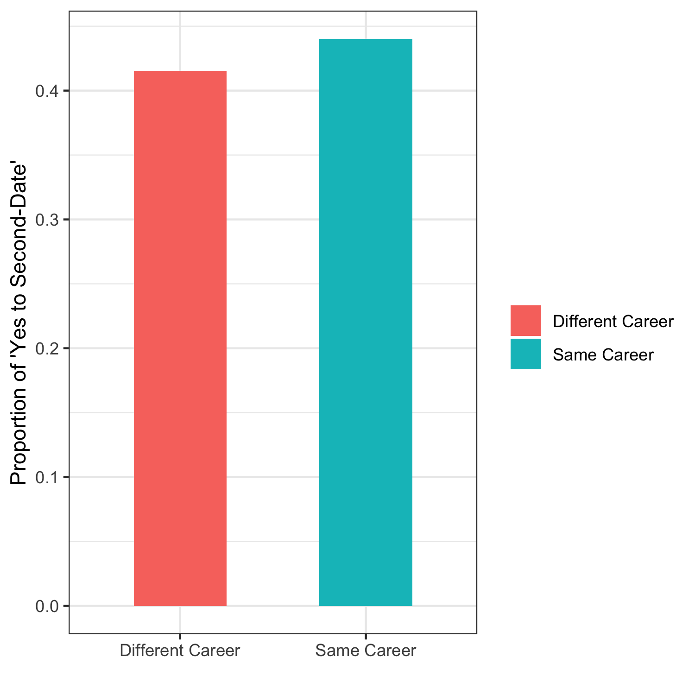
Hypothesis: "People with the same major will be more likely to agree to a second-date"
- Null Hypothesis: Proportion of “Yes to Second-Date” is equal
- Alternate Hypothesis: Proportion of “Yes to Second-Date” is not equal
- Proportion of “Different Career” pairs agreeing to Second-Date: 0.415
- Proportion of “Same Career” pairs agreeing to Second-Date: 0.440
- 95% Confidence Interval for Difference in Proportion: (-0.052, 0.003)
- 2-Sample Proportions Z-Test, Test Statistic: 3.0168
- P-Value: 0.0824
- Conclusion: We fail to reject the null hypothesis and conclude that there is NOT a significant difference in the proportion of individuals who say ‘Yes’ to a second-date between the two groups.
- This finding is different from the analysis performed on the basis of college majors and suggests that having the same career does not increase the likelihood of wanting a second date like having the same college major does.
1.6.a: Logistic Regression (intended career , Likelihood Second Date)
- Objective: Given two people, person A and person B, predict the probability that person A will want to go on another date, controlling for and using the following covariates:
- Person A’s Gender
- Person A’s Intended Career
- Person B’s Intended Career
- Person A’s Race
- Person B’s Race
- Yes/No to Person A and Person B having the same Intended Career
- Yes/No to Person A and Person B having the same Race
- Computed Model’s Coefficients
Variable | Coefficient | P-Value | Odds Ratio |
Same Intended Career (relative to Different Intended Career) | 0.042 | 0.526 | 1.043 |
Same Race (relative to Different Race) | 0.222 | 0.000159 *** | 1.249 |
Male (relative to Female) | 0.679 | < 2e-16 *** | 1.972 |
*For brevity and succinctness, we did not list out the coefficient and corresponding p-value for every college major and race that Person A or Person B could be.
Any subcategories of interest will be mentioned directly in text |
- Having the same intended career will NOT significantly increase an individual’s odds of wanting to go on a second date with a person. Specifically, the odds are 1.04 times higher that person A will want to go on a second date with person B, given that person A and person B are of the same intended career, which is a negligible difference in likelihood.
- This finding is in contrast to our analysis centered on college major, where having the same college major would increase an individual’s odds of wanting to go on a second date with a person. As a result, we can conclude that having the same college major is a stronger indicator of whether or not there is attraction between a pair of individuals than having the same intended career.
- Having the same race will significantly increase an individual’s odds of wanting to go on a second date with a person. Specifically, the odds are 1.25 times higher that person A will want to go on a second date with person B, given that person A and person B are of the same race.
- This finding is consistent with the results of the logistic regression performed with regards to college major.
- Being a man will significantly increase that individual’s odds of wanting to go on a second date. Specifically, the odds have doubled and are 1.97 times higher that person A will want to go on a second date with person B, given that person A is a man.
Part 2: Analysis on Marriage using US Census Dataset 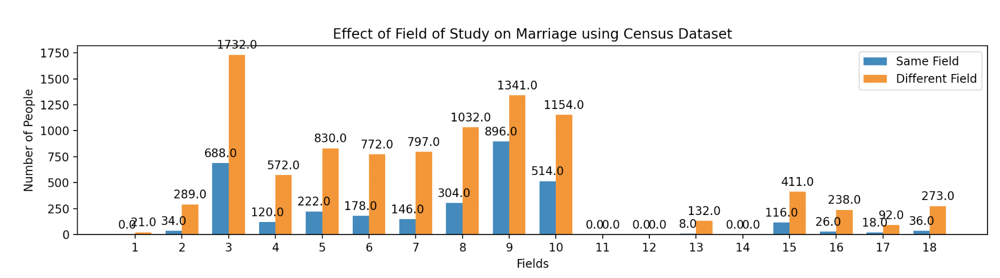
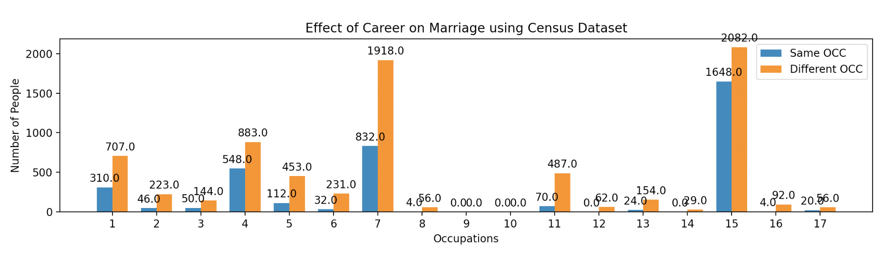
2.1: Comparing Effects of College Major and Occupation on Marriage (Z-tests)
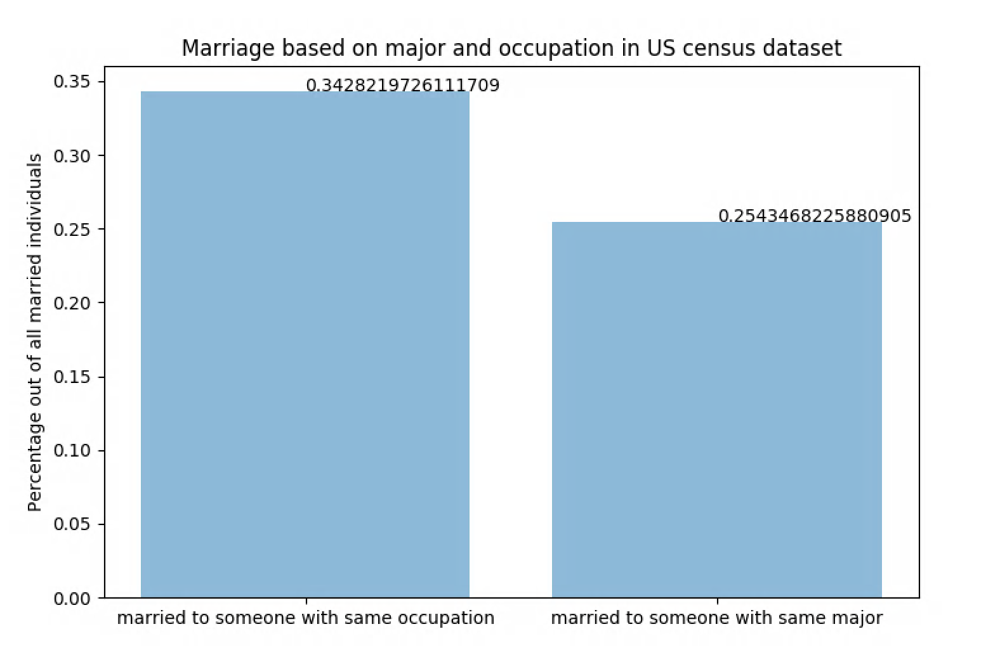
Hypothesis: "Having the same occupation is a better predictor of marriage than having the same college major"
- (i.e. the proportion of married people with the same occupation (p_o) is greater than the proportion of married people with the same college major (p_m)
- H0: proportions are the same (p_o = p_m)
- Ha: proportions are different (p_o > p_m)
Results: test statistic = 15.585592, pval = 0.000000
Conclusion: Since p value <= 0.05 we reject H0, so we conclude that “more married couples have the same occupation compared to the same college major.”
2.2 Comparing Effects of College Major and Occupation on Marriage Within Specific Career/Major Categories (Chi-Squared Tests)
Hypothesis: Occupation is a better predictor of marriage than having the same college major.
- (I.e People are more likely to marry someone with the same occupation than the same field. )
- Null Hypothesis: There is no difference in the distribution of people who marry the same occupation compared to the same field
- Alternate Hypothesis: There is a difference in the distribution of people who marry the same occupation compared to the same field
To test this hypothesis, we conducted the following Chi-square Tests for Independence:
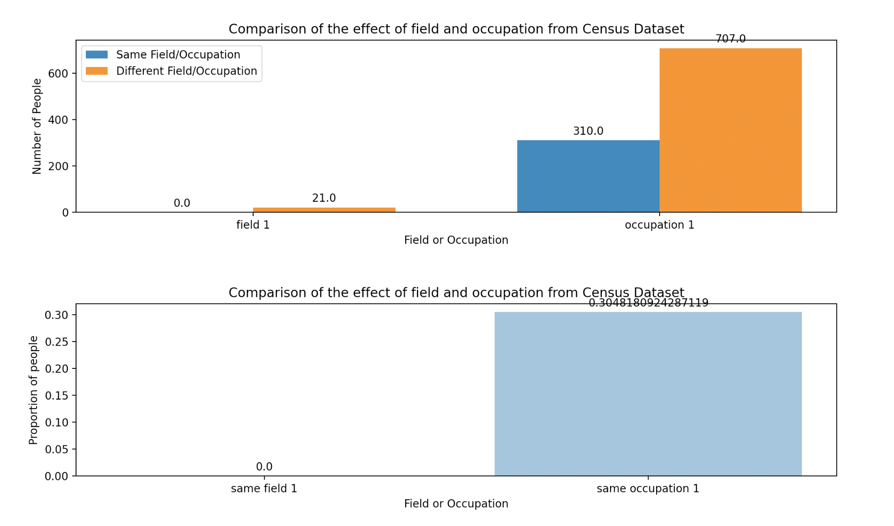
2.2.1: Sub-Hypothesis: Lawyers are more likely to marry another Lawyer than someone with a law school degree.
- (i_e the proportion of people with occupation 1 who marry occupation 1 will be greater than the proportion of people with field 1 who marry field 1.)
- p-value = 0.0054319756208454474
Results:
- Since the p-value <= 0.05, we reject the null hypothesis and conclude that there is a difference in the distribution of people with occupation 1 who marry occupation 1 and people with field 1 who marry field 1.
- Looking at the graphs, we can see that the proportion of people who marry the same occupation is higher than the proportion of people that marry the same field.
Conclusion:
- Lawyers are more likely to marry another Lawyer than a traditional pre-law student will marry another traditional pre-law student.
2.2.2: Sub-Hypothesis: Engineers are more likely to marry another engineer than someone with an engineering degree.
- (i_e the proportion of people with occupation 5 who marry occupation 5 will be greater than the proportion of people with field 5 who marry field 5.)
- p-value = 0.588088149723673
Conclusion:
- Since the p-value > 0.05, we do not reject the null hypothesis and conclude that there is no significant difference in the distribution of people with occupation 5 (engineer) who marry occupation 5 and people with field 5 (engineering degree) who marry field 5.
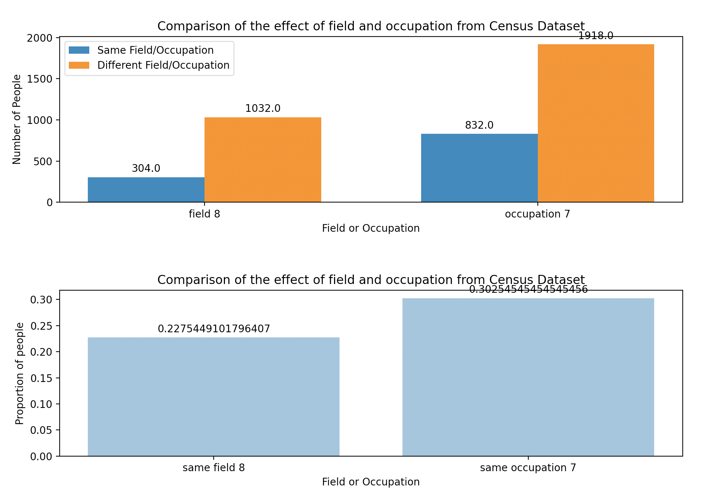
2.2.3: Sub-Hypothesis: People working in business are more likely to marry another person in business than someone with an economics degree.
- (i_e the proportion of people with occupation 7 who marry occupation 7 will be greater than the proportion of people with field 8 who marry field 8.)
- p-value = 6.27540477918687e-07
Results:
- Since the p-value <= 0.05, we reject the null hypothesis and conclude that there is a difference in the distribution of people with occupation 7 who marry occupation 7 and people with field 8 who marry field 8.
- Looking at the graphs, we can see that the proportion of people who marry the same occupation is higher than the proportion of people that marry the same field.
Conclusion:
- People working in business are more likely to marry another person in business than someone with an economics degree.
2.2.4: Sub-Hypothesis: Psychologists are more likely to marry another psychologist than someone with a psychology or sociology degree.
- (i_e the proportion of people with occupation 3 who marry occupation 3 will be greater than the proportion of people with field 3 who marry field 3.)
- p-value = 0.47891983088700185
Conclusion:
- Since the p-value > 0.05, we do not reject the null hypothesis and conclude that there is no significant difference in the distribution of people with occupation 3 (psychologist) who marry occupation 3 and people with field 3 (psychology/sociology degree) who marry field 3.
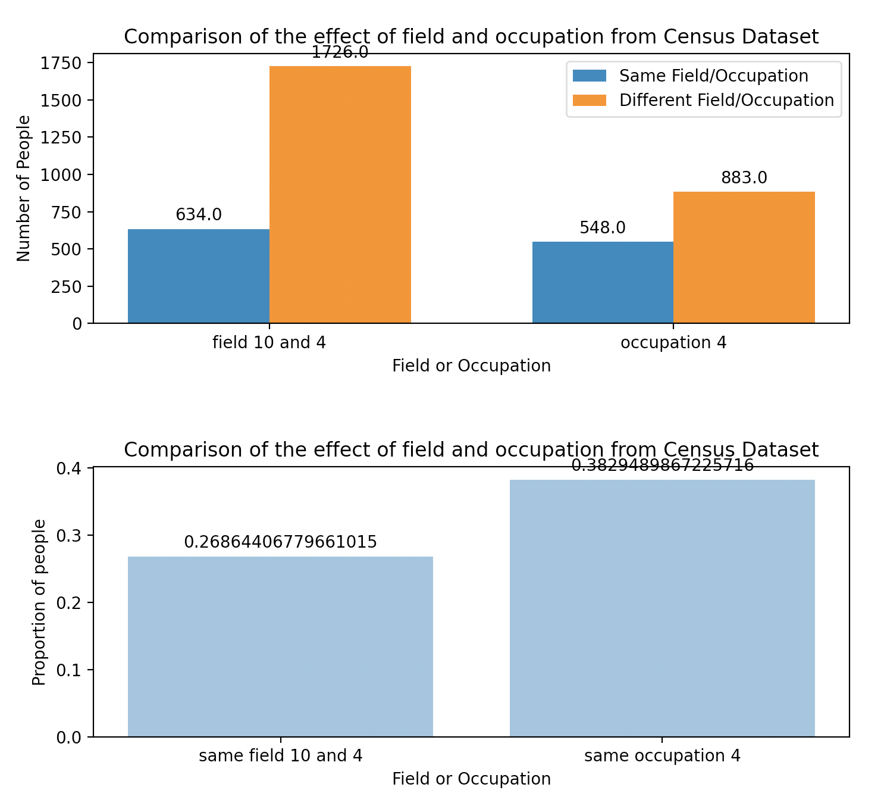
2.2.5: Sub-Hypothesis: Doctors are more likely to marry another doctor than someone with a degree in the sciences.
- (i_e the proportion of people with occupation 4 who marry occupation 4 will be greater than the proportion of people with field 10 or 4 who marry field 10 or 4.)
- p-value = 2.3218704459515337e-13
Results:
- Since the p-value <= 0.05, we reject the null hypothesis and conclude that there is a difference in the distribution of people with occupation 4 who marry occupation 4 and people with field 10 and 4 who marry field 10 and 4.
- Looking at the graphs, we can see that the proportion of people who marry the same occupation is higher than the proportion of people that marry the same field.
Conclusion:
- Doctors are more likely to marry another doctor than someone with a degree in the sciences.
2.2.6: Sub-Hypothesis: People who work in creative arts or writing are more likely to marry someone with the same job than someone with a degree in English or Creative writing.
- (i_e the proportion of people with occupation 16 or 6 who marry occupation 16 or 6 will be greater than the proportion of people with field 6 who marry field 6.)
- p-value = 0.2654690983576004
Conclusion:
- Since the p-value > 0.05, we do not reject the null hypothesis and conclude that there is no significant difference in the distribution of people with occupation 16 or 6 (Creative arts/writing)who marry occupation 16 or 6 and people with field 6 (English/creative writing degree) who marry field 6.
Conclusion
Overall Conclusion
From Part I (analysis on initial attraction using the Kaggle dataset), our main conclusion was that an individual’s initial attraction to someone is positively influenced by whether they have the same college major, but not by whether they have the same intended career. This directly supports our main hypothesis.
Looking at the specific metrics for “initial attraction,” we find that on average, people with the same major will rank their date’s attractiveness, likeability, and likelihood to go on a second date higher than they would if they were in a different major. Similarly, people with the same intended career will rank their date’s attractiveness and likeability higher than they would if they had different career interests, although the effect is not as great as if they people were in the same college major. Conversely, however, we found that having the same intended career is NOT a statistically significant predictor of likelihood to go on a second date. Through linear regression and logistic regression analysis for both intended career/college major, we also find that having the same race is a predictor of likeability and likelihood of second date, but not attractiveness score. Being male is also a significant predictor of all three metrics.
These results are consistent with our hypothesis that having the same college major is a stronger predictor of initial attraction than same career interests. We predicted that when people are younger, their college major defines them more, and “intended career” is more ambiguous and speculative. The Kaggle study also uses individuals from the university, so perhaps students with the same college major knew each other from classes beforehand and had more previous experiences to connect them and drive their interactions. Again, this refers back to our main hypothesis that relationships are driven by one’s proximity/distance to another individual, and in this case, having the same college major is a stronger connecting factor than having the same intended career. We also found some interesting confounding variables through the regression analyses: race and sex. Having the same race is a strong predictor of likeability and likelihood of going on a second date, which we hypothesize is because individuals of the same race possess a greater amount of shared interests, having grown up in a similar environment. Having the same race is not a strong predictor of attractiveness score, however, and this could perhaps be due to racialized beauty standards based on whiteness and Eurocentric ideals. We also found that men rated their dates higher on average than females, and we predict that this is due to the evolutionary mechanism of mate choice, with females often exhibiting more mate choice selection than males in most species.
From Part II, (analysis on marriage using the US census dataset), our main conclusion was that the proportion of married couples with the same occupation is statistically greater than the proportion of married couples with the same college major. However, our analysis within specific fields shows us that the differences in distribution are not always significant. Specifically, we found that it was more likely for lawyers, people working in business, and doctors to get married to individuals of their own occupations when compared to the likelihood of individuals who majored in fields related to law, business, or medical sciences marrying individuals with those same majors. However, there was no statistically significant difference for psychologists, creative writing/English, and engineering. This result also directly supports our main hypothesis.
We attribute our findings to our hypothesis that proximity is an important factor in marriage, and people have a greater chance of meeting, interacting with, and dating one another if they are in the same occupation. In addition, people often change interests and career paths, so college majors are less important in defining people and who they interact with as they get older (i.e. a computer science student can go on to become a lawyer!). We believed that our hypothesis would be especially prominent and relevant to the hyper-specialized occupations like the ones we observed significant differences in, notably lawyers, doctors, and business individuals, because employees from those fields usually do not have a lot of exposure to people in other occupations. For example, the day-to-day agendas of doctors revolve around the hospital and the day-to-day agendas of lawyers and business individuals revolve around their respective firms, therefore they are less likely to meet people from other occupations and marry them. Conversely, engineers, journalists, and creative artists are more predisposed to collaborating with other occupations through their jobs, so the likelihood of marrying an individual in their same occupation is not as high, so the results we saw for those fields, where there was not a significant increase in same-occupation couples compared to the analogous same-major couples, are not as surprising.
Future Directions
In terms of visualizations and final poster, we will likely use all of the tables and graphs we have above, but group the results from the Kaggle set together since they show similar conclusions. For our capstone interactive component, we will create a webapp that allows people to input their major, intended career, race, and sex, as well as another person’s qualities. Using the linear and logistic regression results, we will output a prediction of attraction, likeability, and decision to go on a second date from both the individual’s and partner’s perspectives.